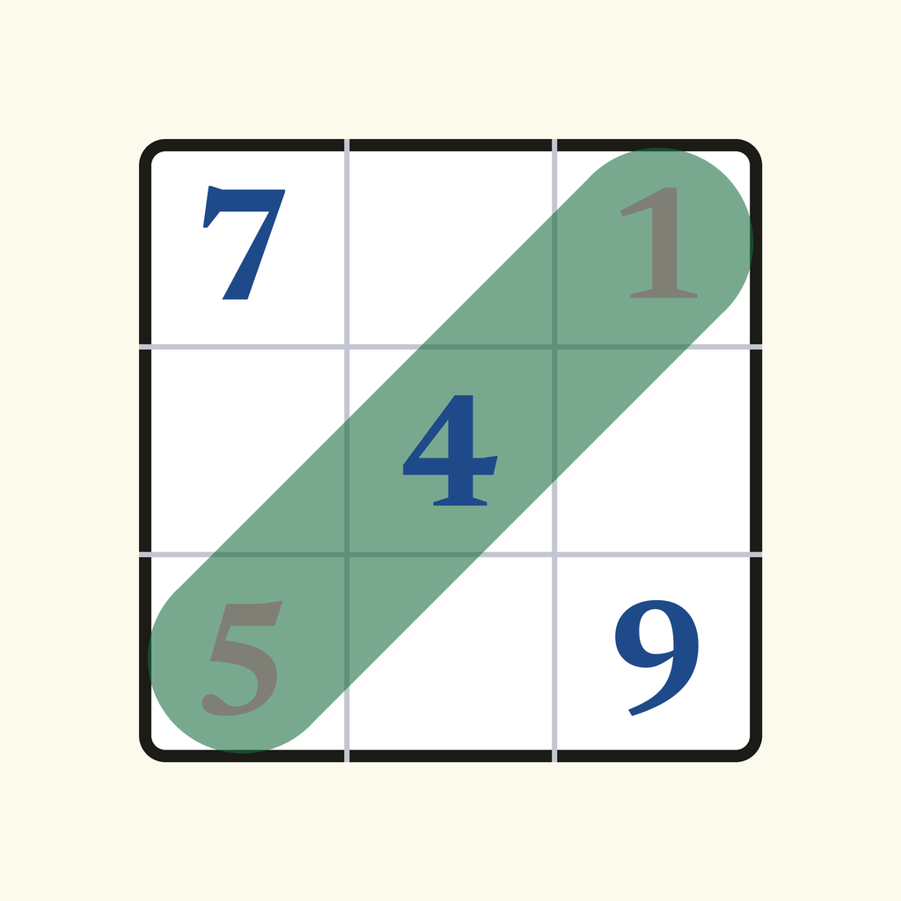

Het puzzelboekje dat nooit vol raakt: elke dag een verse sudoku en woordzoeker, gratis, zonder account en zonder internet. Een app van SMLT Studio voor iPhone.
Ik heb "Geen reclame" gekocht maar zie nog advertenties. Ga naar Instellingen › Geen reclame › Aankoop herstellen. Dat haalt je aankoop opnieuw op bij Apple.
Mijn reeks is gestopt. Eén dagpuzzel per dag houdt de reeks vast. Mis je een dag, dan kun je de volgende dag nog herstellen via het startscherm.
De puzzel van vandaag is anders dan bij een vriend. De dagpuzzel wisselt om middernacht in je eigen tijdzone; met dezelfde datum is de puzzel voor iedereen gelijk.